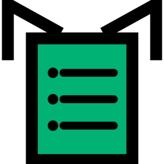
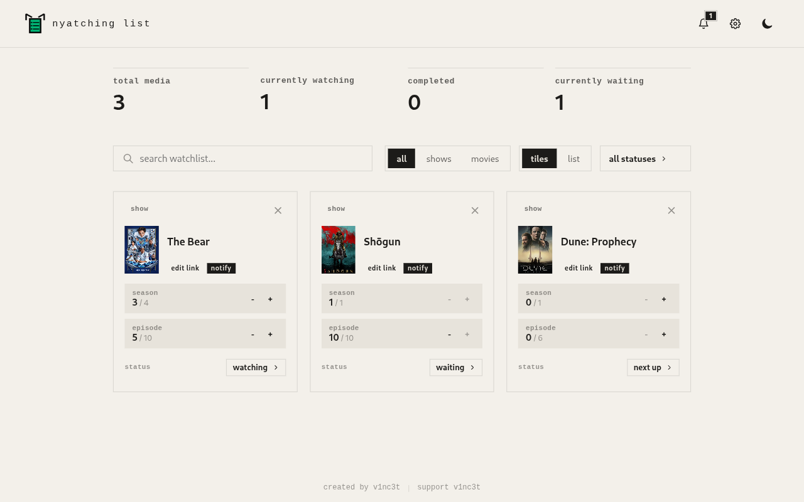
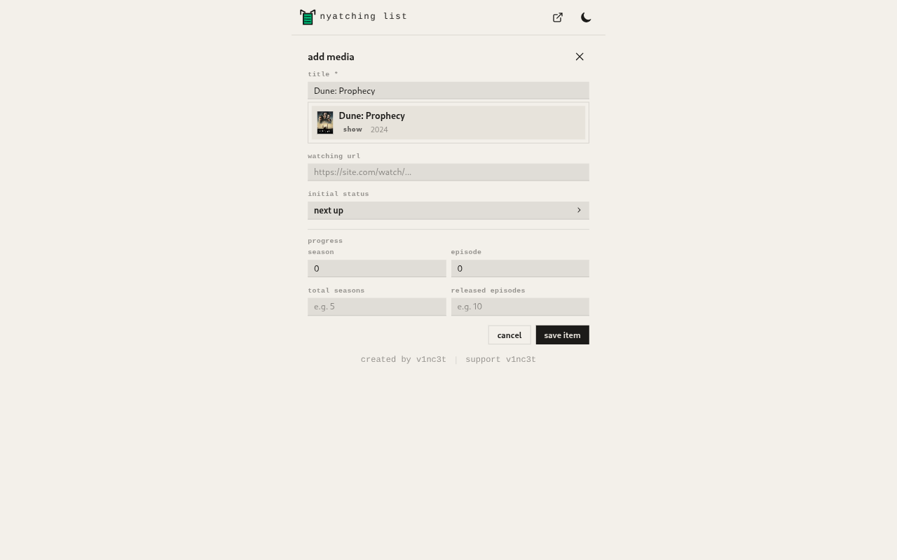
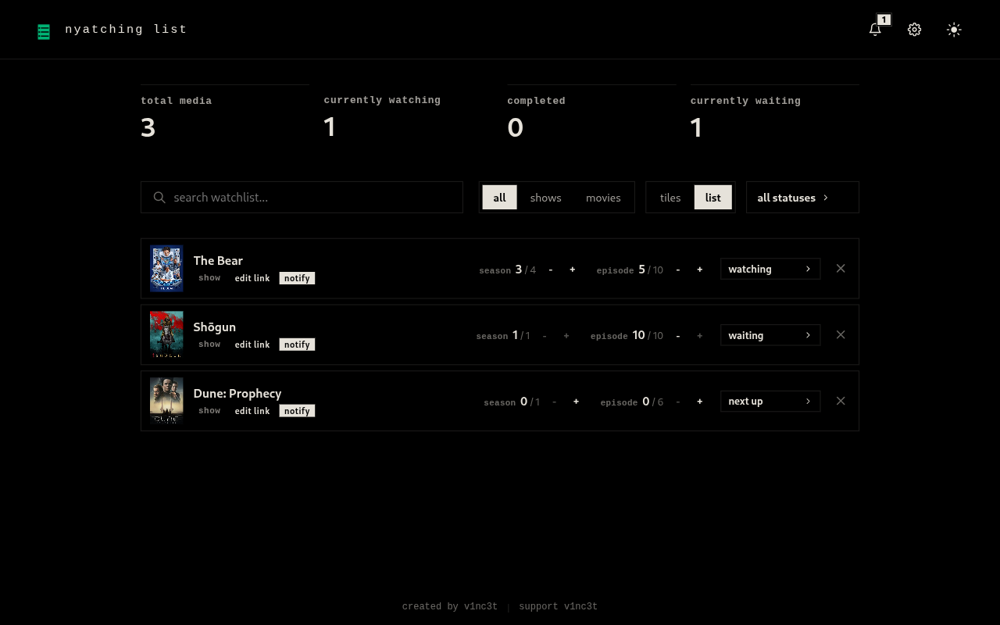

Nyatching List
Track the shows and movies you are watching.
Chrome, Brave, Edge and Firefox (desktop and Android). Free.


Add from the popup
Search TMDB, pick a title, set its status and progress.

Tiles or list
Step through seasons and episodes, or minutes for movies.
Statuses
Watching, waiting, next up, completed, dropped.
IMDb quick add
Open it on an IMDb title page to pre-fill the form.
Notifications
An alert when a new episode or season is out.
Dark / light
Switch themes from the popup or dashboard.
Local storage
Your list stays on your device. No account.